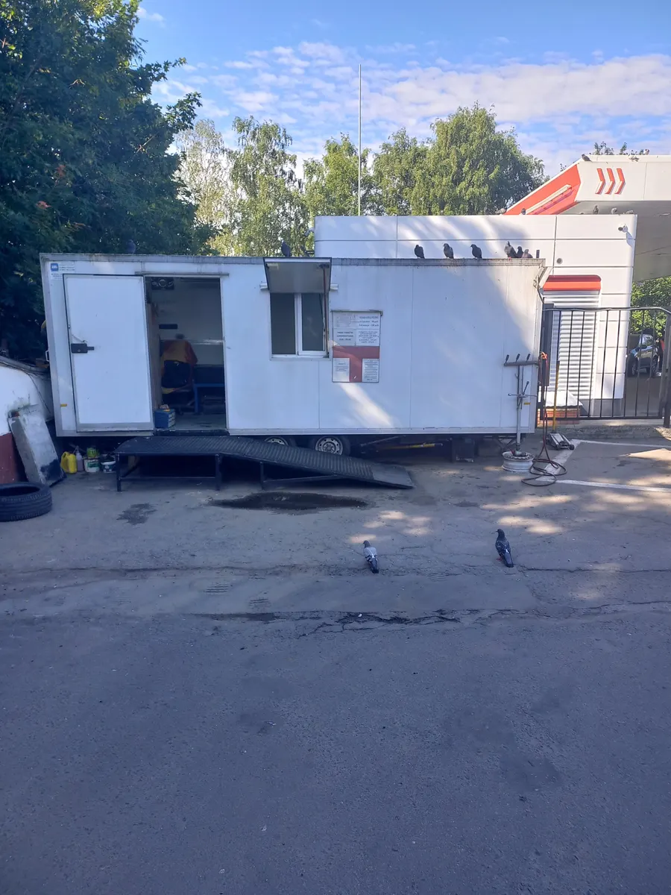
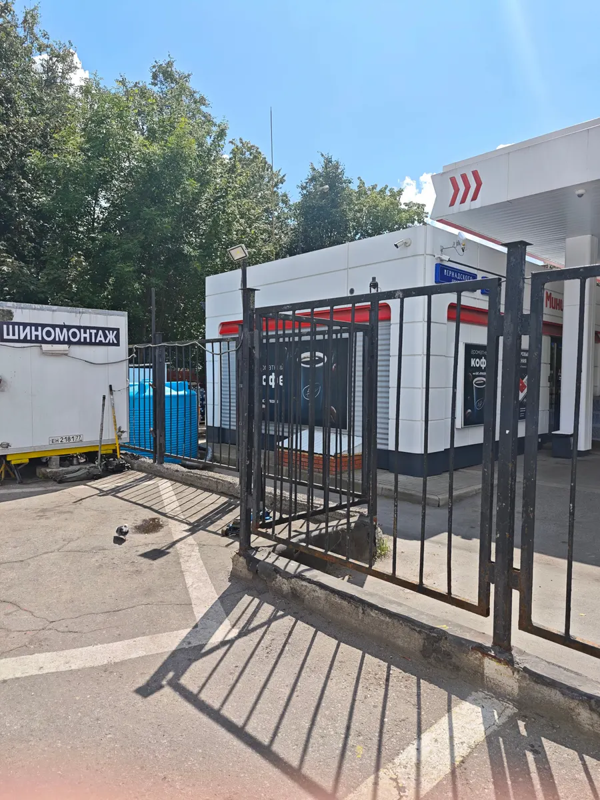
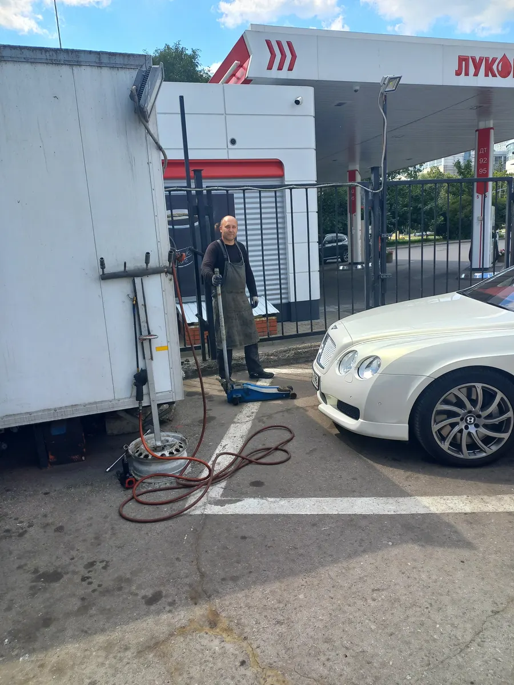
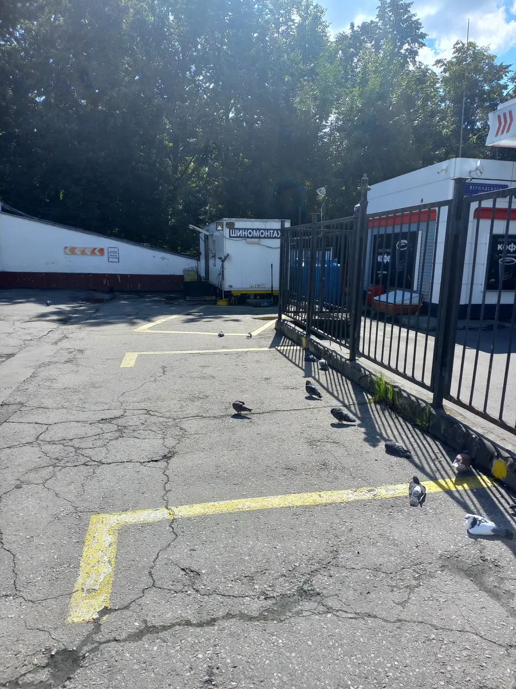
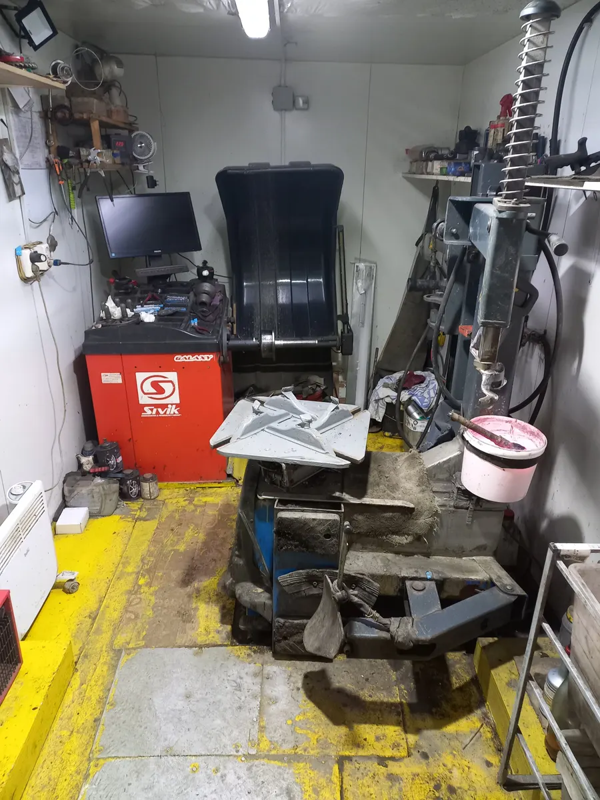
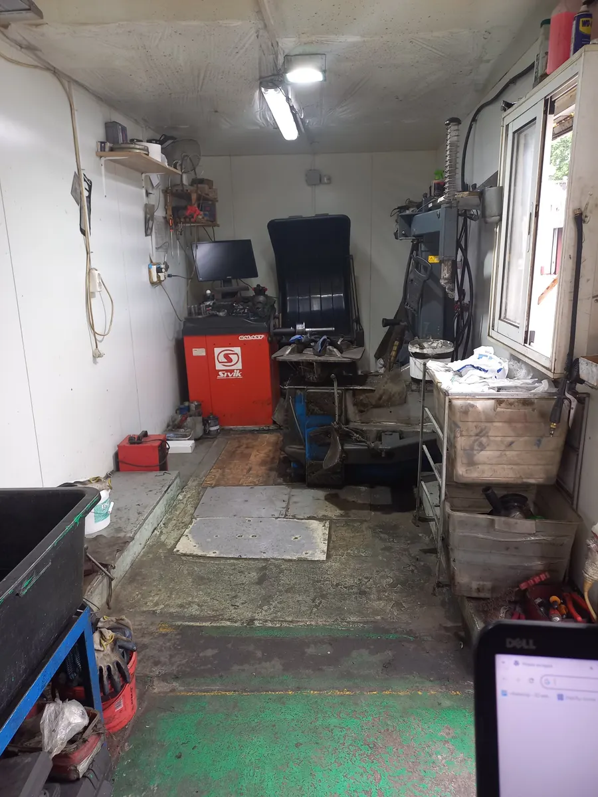
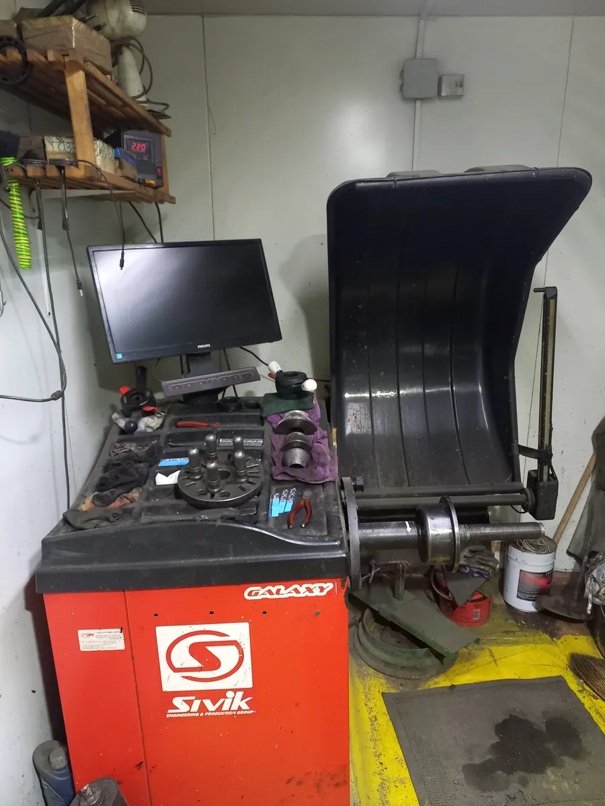
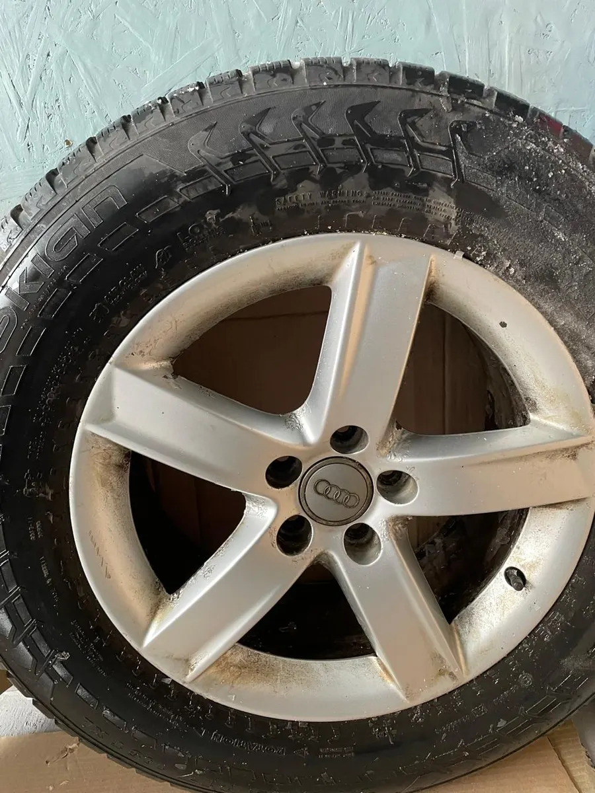

Шиномонтаж на проспекте Вернадского, 5А
Белый вагончик у заправки. Шиномонтаж, ремонт проколов, балансировка, хранение шин. Клиенты ездят сюда годами: «лет 15, или даже больше».

- 8:00-20:00
- каждый день, воскресенье тоже
- 4,7
- 181 оценка на Яндекс.Картах, награда «Хорошее место 2026»
- 680 м
- от метро Университет, рядом заправка и мойка
Ищите белый вагончик у заправки
Проспект Вернадского, 5А. Бокс стоит на открытой площадке рядом с АЗС, на асфальте жёлтая разметка. Во дворе есть мойка, а клиент Андрей пишет, что заезд удобный.



Сколько стоит
500 ₽шиномонтаж колеса
3 000-10 000 ₽переобуть все колёса, зависит от размера
Цены с карточки на Яндекс.Картах. Остальные работы и точную сумму для вашей машины назовут по телефону.
- Ремонт проколовклиенты пишут, что находят и маленькие проколы
- Балансировкастанок внутри вагончика
- Вулканизацияотмечена на карточке
- Грузовой шиномонтажотмечен на карточке
- Хранение шинотмечено на карточке
- Подбор и заказ шинпривезут на площадку, пишут клиенты
- Выкуп шин и дисковотмечен на карточке
- Утилизация шинстарые покрышки заберут
Как здесь работают
Снаружи домкрат и пневмоинструмент, внутри вагончика станки для монтажа и балансировки. Фото с вашей карточки.




Много лет одна команда
«Ездим к Игорю со всеми машинами семьи уже лет 15, или даже больше. Самые аккуратные и внимательные люди. Не разводят на доп.услуги, им можно верить 100%.»
«Очень рекомендую этот сервис. Ребята большие молодцы и уже много лет одна и та же профессиональная команда.»
Oleg Ivanov, 15 ноября 2022«По предварительной записи работают четко. Долго ждать ни разу не приходилось.»
Алексей Федоров, 2 декабря 2025«Запишут ко времени, колеса помоют от грязи при перебортировке, и можно новые даже заказать.»
Мария Лейн, 10 ноября 2022«Приехал в воскресенье. Монтаж работает по графику. Сделали быстро и чётко.»
Антоша, 21 декабря 2025
Запишитесь на своё время
Выберите день и час, откроется WhatsApp с готовым сообщением. Остаётся нажать «отправить», время подтвердят в ответе.
Каждый день с 8:00 до 20:00. Второй номер и WhatsApp: +7 (916) 559-69-34.